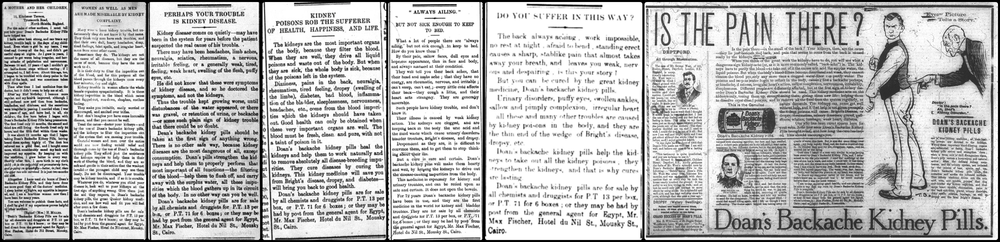
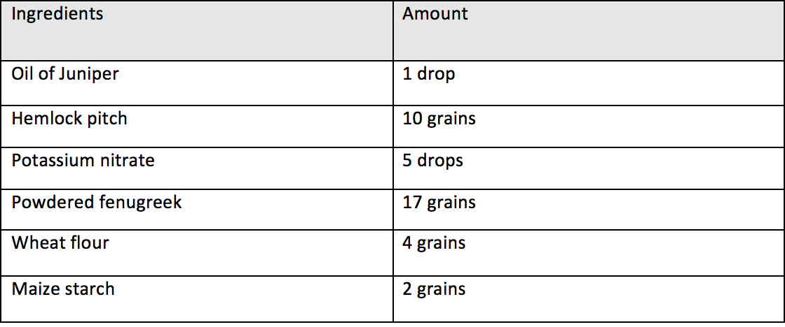
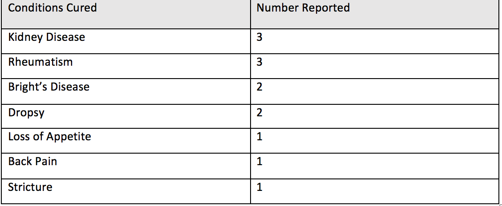
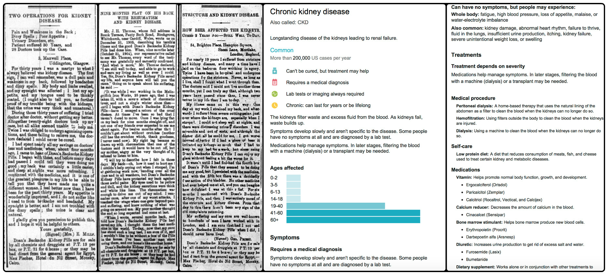
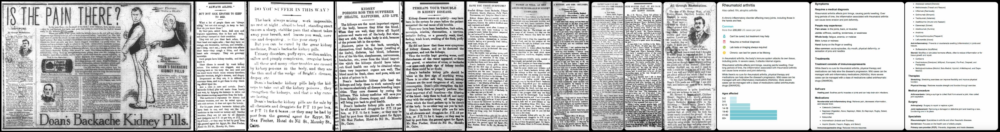
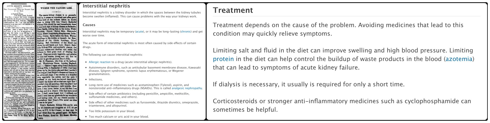
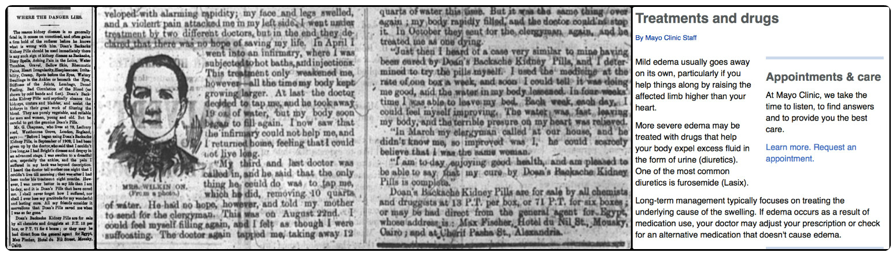
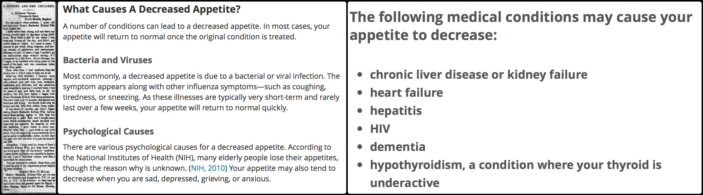
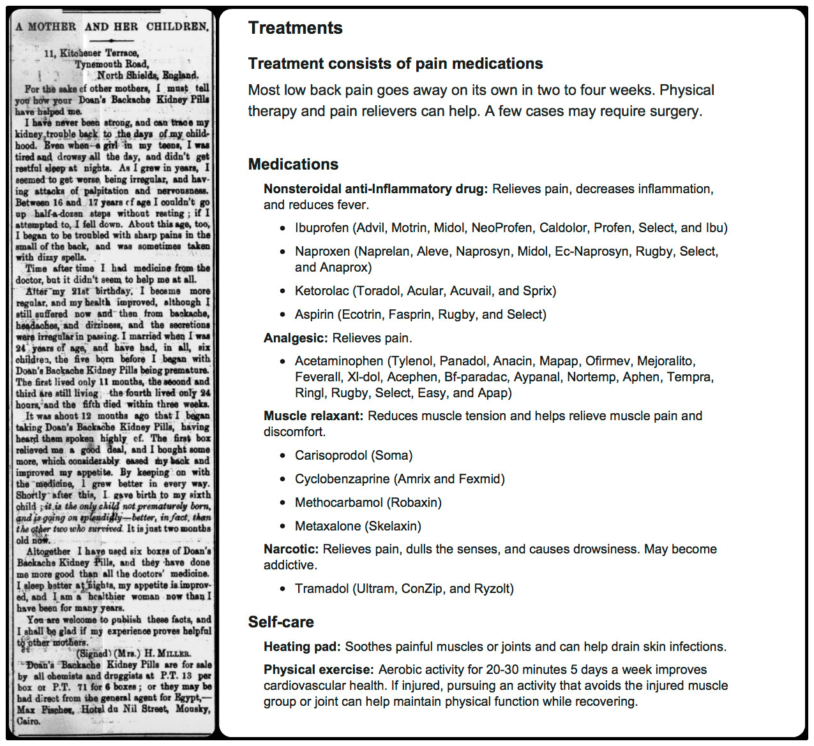
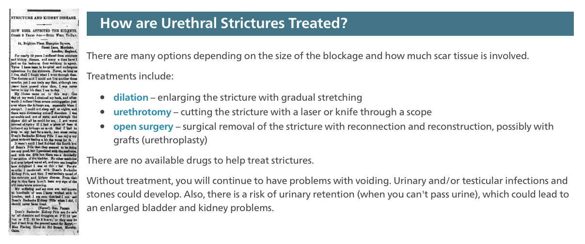

Medical Miracles
While searching for a serial question to embark on, I really wanted to be drawn to the patterns of trade or mail lines maybe even exciting expeditions. But I noticed one aspect of each issue that always caught my attention, the medical miracles. I would see personal accounts of Egyptian citizens telling their seemingly hopeless stories. “Severe rheumatism,” “kidney trouble,” and “poor appetite,” were just some of the bed confining ailments that were all suddenly cured by a magic box of pills. And these stories weren't just present in my issues. I found them scattered throughout the whole year. The question I will be investigating is how successful really were these pills? I will be researching how many cases of medical success resulted from the Doan's Backache Kidney Pills in particular, over the course of this year. I will also go into further studies of the proclaimed brand and gain more historical and background knowledge of its origins and the pill's chemical makeup. I hope to conclude how successful of a brand this really was and determine if it was as miraculous as the people of Egypt claim.
I began my research by trying to gain a more conclusive background of the brand. Was it more natural or synthetic? What was the main ingredient? By sifting through countless pages I finally found my answer within the newspaper itself. Apparently Doan's Backache Kidney Pills were a more natural remedy than anything else. The medicine had been used by the Quakers for 72 years, comprised of “roots” and “herbs.” The pill acts as a stimulant to the kidneys, naturally aiding the filtration blood, and the flushing of surplus water and impurities in the blood stream. Even more specifically, the pills catalyze the dissolving process of crystallise I poisons. This can in turn cure, “Bright's Disease, dropsy, rheumatism, urinary disorders, gravel, gall stones, sciatica, lumbago, weak heart, and diabetes,” or so the brand claims, I have attached proof of these claims in the following images.

I however decided to conduct my own personal research. I did find that they were indeed comprised of natural ingredients,“purely vegetable” to be exact. I discovered this through a reliable web source, detailing the pill's wrapper information and directions for use. I have provided a chart listing the pill's components and the source from which obtained can be found in my works cited.

I then decided to turn my attention back to the newspaper. Knowing that these pills were actually what they claimed to be, just how many cases of success were reported? And what did they all have in common? I began to search for a pattern. There were fourteen total features of the Doan's Backache Kidney Pills. A few of the advertisements were purely informational. Including facts about the drug and symptoms it could treat. The others were actual patient accounts. I organized these based upon which condition or conditions they suffered from and claimed to have been cured. I then organized this into the following chart.

The results were astonishing. The drug did in fact treat a wide variety of diseases that it claimed to have. One of the most prevalent being kidney disease which is a very serious condition. I decided to research all of the diseases that patients claimed to have been cured from, and compare them to modern ways of treatment, I made several breakthroughs with this method.
Kidney disease cannot be treated by medication alone, it can ease symptoms by providing much needed vitamins, but it cannot actually cure kidney disease which is what these subjects claimed. Nowadays the only real cure is dialysis or kidney transplantation, anything else is just a cover up for the real issues at hand, only treating the symptoms and not the problem. Below I have included all of the cases of supposedly cured kidney disease within the issues and next to that I have included up to date information from a reliable medical source.

Rheumatism, unlike kidney disease can be treated with medication. There is no cure for this disease but anti-inflammatory drugs can make an unbelievable difference and ease joint pain greatly, so it is very likely that sufferers of this condition were actually assisted by Doan's Backache Kidney Pills. Again I have included all of the cases of cured Rheumatism within the issues and next to that I have included up to date information from a reliable medical source.

Bright's Disease was another claimed ailment supposedly cured by these pills. Bright's Disease is currently treated on a case by case basis because each underlying cause of disease is very different and there could be a wide range of causes for each unique person. However, it is greatly possible that the Doan's Backache Kidney Pills did indeed assist in relieving symptoms in some cases, if the cause was inflammation of the kidneys and nothing else. So these claims are not discounted. I included all of the cases of cured Bright's Disease within the issues and next to that I have included up to date information from a reliable medical source.

Next was dropsy, currently known as edema. This is swelling caused by excess fluid trapped inside your tissues. It was proven that this ailment can in fact be treated by simple diuretics, just like Doan's Backache Kidney Pills so I have concluded that all of these patient claims are valid. Again, I included all of the cases of cured dropsy within the issues and next to that I have included up to date information from a reliable medical source.

Individuals also claimed that their loss of appetite was somehow regained after taking the pills. Upon research, this was the most difficult to conclude. Loss of appetite can stem from many things, a majority of them being psychological. But many cases occur because of bacteria, viruses, and severe medical conditions, including kidney failure. These pills had the capability of strengthening the kidneys so it is possible that if the source of the problem was kidney functioning the pills may have been helpful in treating loss of appetite. I can conclude that these patient claims were in fact valid. I included all of the cases cured of loss of appetite within the issues and next to that I have included up to date information from a reliable medical source.

Back pain was one of the last conditions that was claimed to have been cured by these pills. Just as Bright's Disease, it is diagnosed on an individual basis by doctors and treated accordingly. But medications have been proven useful if they contain anti-inflammatory agents. Therefore I have to render all claims of cured back pain from Doan's Backache Kidney Pills reliable. I included all of the cases of cured back pain within the issues and next to that I have included up to date information from a reliable medical source.

Lastly was urethral stricture, this is the narrowing of the urethra which restricts urinary flow. Modern research suggests that medication is of no assistance in treating the disease. It can only be cured surgically by physically removing the blockage. Therefore, the claim made for urethral stricture being cured by Doan's Kidney and Backache Pills must be discounted. I included all of the cases of cured back pain within the issues and next to that I have included up to date information from a reliable medical source.

My final conclusion is that Doan's Backache and Kidney Pills were undoubtedly effective. However they were not as miraculous as they claimed to be. They were not the cure for kidney disease and they could not have been curative for urethral strictures. And not to mention there were diseases they said they could cure that were never even mentioned by patients, throughout the whole year. If the pills really did cure severe conditions, like diabetes and weak heart, I would think the public would be inclined to speak out and I believe these cures would still be acknowledged and practiced today, but they are not. I do think this drug provided much needed relief for many people suffering from things like back pain, loss of appetite, rheumatism, dropsy, and very specific cases of Bright's Disease. And that in and of itself is remarkable, especially for a natural drug, one sold over the counter, and one of this time period. The Doan's brand is still around today and sold at local drugstores, it still acts as an anti- inflammatory drug and has extremely high ratings from users. The only conditions they claim to cure nowadays is joint stiffness, swelling and pain. I really do believe that this was an extraordinary brand, maybe not capable of medical miracles but certainly capable of relief.
Works cited:
- https://macdonaldtownbicycleclub.com/2016/08/15/doans-backache-and-kidney-pills-mr-john-loaney-a-permanent-cure-after-three-years-suffering/
- https://www.gstatic.com/healthricherkp/pdf/chronic_kidney_disease.pdf
- https://www.gstatic.com/healthricherkp/pdf/rheumatoid_arthritis.pdf
- https://medlineplus.gov/ency/article/000464.htm
- http://www.mayoclinic.org/diseases-conditions/edema/basics/definition/con-20033037
- http://www.healthline.com/symptom/loss-of-appetite
- https://www.gstatic.com/healthricherkp/pdf/low_back_pain.pdf
- http://www.urologyhealth.org/urologic-conditions/urethral-stricture-disease/treatment
Valerie Curcio
Student
The author, a student at Florida State University, was enrolled in the digital microhistory lab in fall 2016.